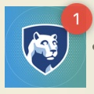
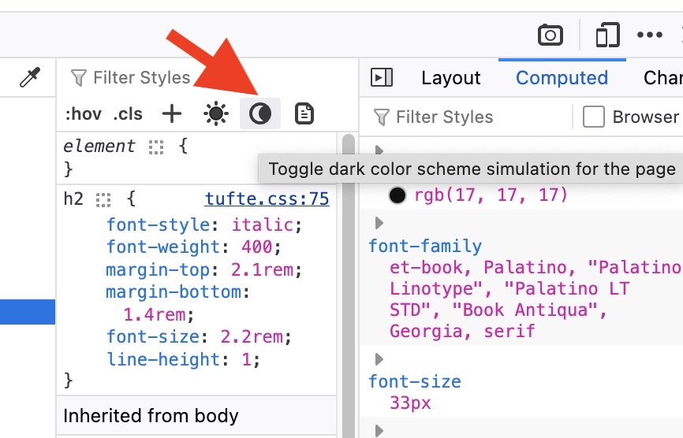

Supported for a PWA
// Check for support first.
if (navigator.setAppBadge) {
// Display the text as a badge
navigator.setAppBadge("B");
}// Check for support first.
if (navigator.clearAppBadge) {
// Remove the badge on the app icon.
navigator.clearAppBadge();
}
@media (prefers-color-scheme: dark) {
// Styles for a dark theme.
}body {
background-color: white;
color: black;
}
input {
background-color: white;
color: black;
border-color: black;
}
button {
background-color: black;
color: white;
}@media
(prefers-color-scheme: dark)
{
body {
background-color: black;
color: white;
}
input {
background-color: black;
color: white;
border-color: white;
}
button {
background-color: white;
color: black;
}
}Dark mode
Check example
What happens when you change your OS/browser settings for light and dark mode?
What do the @media rules do?
color-schemeheader {
color-scheme: only light;
}
main {
color-scheme: light dark;
}
footer {
color-scheme: only dark;
}color-schemehtml {
color-scheme: light;
}
@media (prefers-color-scheme: dark) {
html {
color-scheme: dark;
}
}
color-schemeYou’ll have to use prefers-color-scheme for
other elements
@media (prefers-color-scheme: dark) {
img {
filter: brightness(.8) contrast(1.2);
}
}